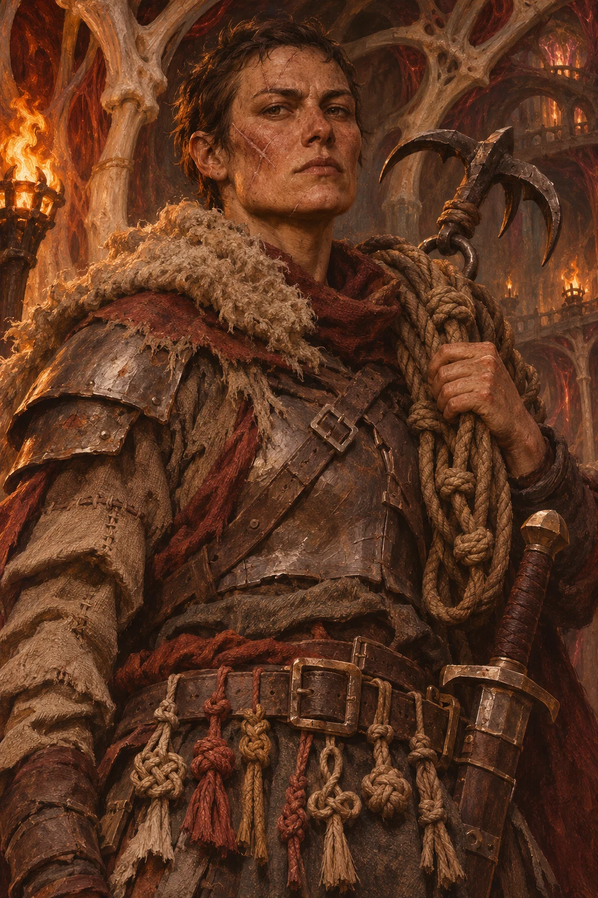
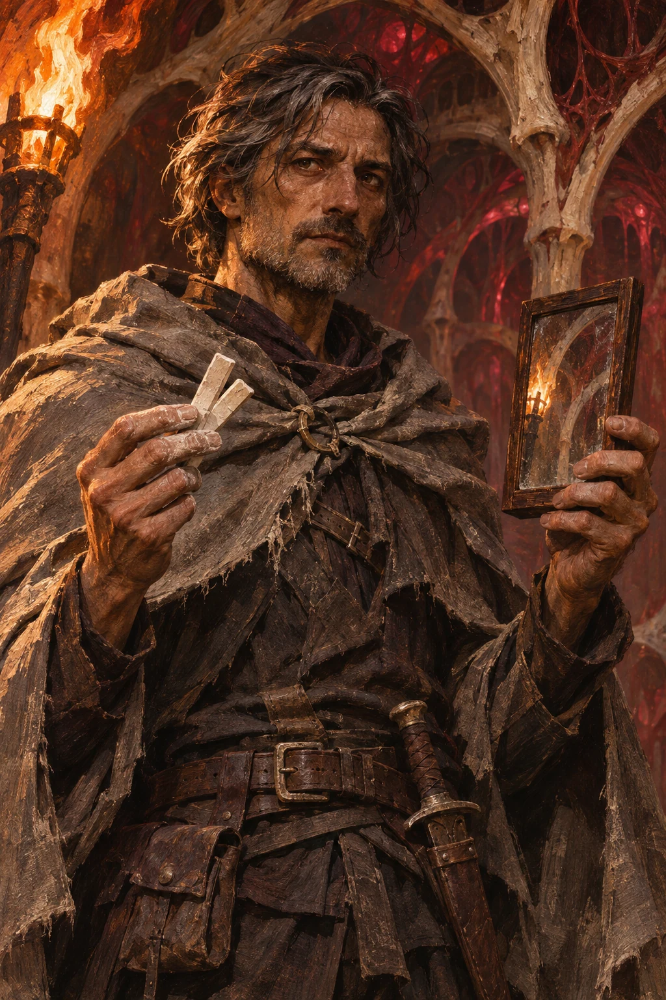
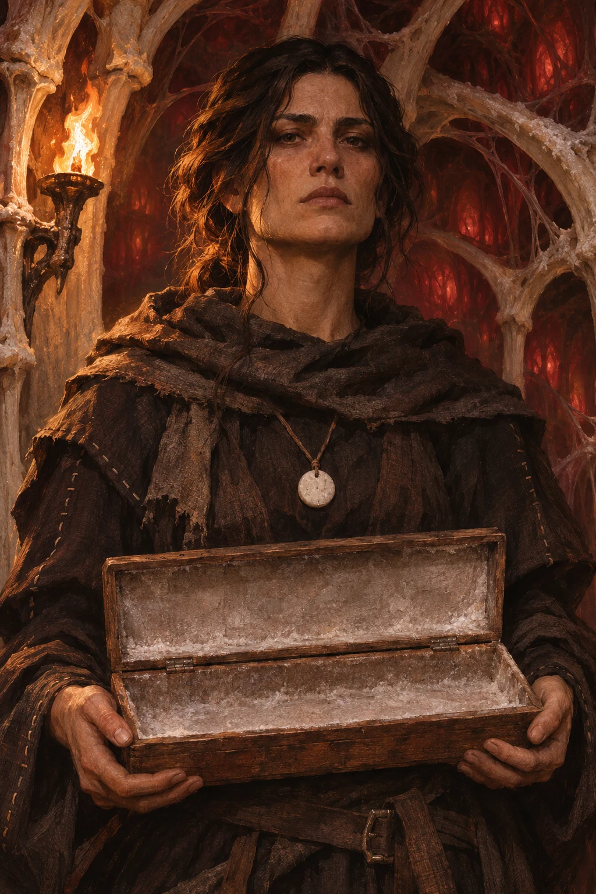
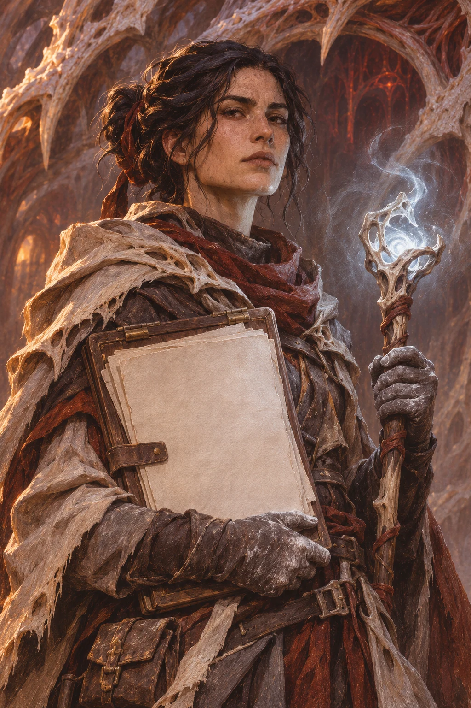

Мир и начало
Олом лежит поперёк соляного ущелья дольше человеческой памяти; его величина — свойство местности, а не размер боевого противника. Внутри пять уровней: на первых двух кость светится сама, ниже без огня не видно ничего. Титан дышит: малый вдох проходит по ходам каждые несколько минут, а большой — раз в сутки, на рассвете. Поселений внутри нет. Семь лет назад экспедиция Эрны Вей (ей было 72) ушла к короне; вышел один носильщик, Освин Глод. Внучка Эрны, Дара Вей (46), дала отряду двенадцать связок запаса — пайки, факелы, сало для ламп — и ждёт у шва. Вход открывается только на рассвете. Все герои начинают у Соляного рта, на третьем уровне канонических классов.
Ущелье ещё синее, соль на губах титана серая. Огромный бок Олома поднимается над вами, как берег, и по нему тянется шов — две костяные губы, обведённые восемью белыми кольцами соли. Дара Вей ставит у ваших ног двенадцать связок: пайки, факелы, горшок сала для ламп. «Сначала — люди. Потом — вещи. Потом, если останется, — она». Освин Глод смотрит на восток и шевелит губами. Первый луч касается верхнего кольца. «Раз», — говорит Освин, и шов начинает расходиться.

34 лет · воин · уровень 3
Ирма Скол
Проводница трудных спусков
Короткие волосы, шерстяной ворот и множество выцветших узлов на поясе; на плече кованый крюк-кошка и бухта верёвки с узлами.
Однажды ты вывела отряд, бросив дорогой груз, и до сих пор считаешь это своей неудачей. Дара наняла тебя именно за это: ты ведёшь лист запаса и говоришь вслух, когда пора поворачивать.
Связь
Федор умеет замечать момент, когда твоя осторожность становится упрямством; договоритесь, каким знаком он может тебя остановить.
В центре внимания
Назови приемлемую цену короткого пути и объясни группе, где ты готова повернуть обратно; умение не заменяет общего решения.
Личный вопрос
Как понять, что вещь уже стоит дороже, чем ты согласна заплатить?

41 лет · плут · уровень 3
Федор Нев
Следопыт заброшенных дорог
Пыльный плащ, плоские мелки и маленькое зеркало в оправе из тёмного дерева.
Ты узнаёшь дорогу по тому, что другие считают мусором. Внутри титана белые метки могут двигаться, и придётся найти то, что стоит на месте.
Связь
Янина однажды сохранила вещь, которую ты собирался выбросить; вместе решите, почему она ей показалась важной.
В центре внимания
Предложи проверяемый способ различать два похожих прохода; любой спутник может выполнить опыт и прочитать результат.
Личный вопрос
Какой след ты оставляешь людям, которых никогда не увидишь?

29 лет · жрец · уровень 3
Янина Вей
Хранительница прощальных обрядов
Тёмная дорожная одежда, рукава с простыми стежками и пустой деревянный футляр длиной в локоть, выложенный изнутри солью.
Дара — твоя дальняя родственница. Ты взяла пустой футляр, чтобы принести то, что останется от Эрны, но не обещала принести то, что она скажет.
Связь
Ирма доверила тебе право напомнить о возвращении; выберите слово, которое не будет звучать как приказ.
В центре внимания
Скажи, что можно сохранить после утраты самой вещи; твой обряд не обязателен и не открывает особый проход.
Личный вопрос
Когда забота о прошлом превращается в нежелание дать ему уйти?

24 лет · волшебник · уровень 3
Ксана Торн
Рисовальщица невозможных пространств
Перчатки в меловой пыли и складывающаяся дощечка с чистыми листами.
Ты хочешь нарисовать место, которое не обязано оставаться прежним. Здесь твой рисунок — дорога назад, а дорога назад меняется.
Связь
Спросишь у выбранного товарища, какую маленькую деталь он хочет увидеть на будущей карте, и постараешься её не забыть.
В центре внимания
Покажи группе две возможные формы одного пространства и предложи безопасный способ выбрать между ними без заклинания.
Личный вопрос
Что ты оставишь на карте пустым, чтобы не заманить туда следующего путника?

38 лет · воин · уровень 3
Яр Осок
Носильщик хрупких грузов
Широкий мягкий пояс, чинёная рама за плечами и аккуратный свёрток сухих носков.
Ты умеешь донести хрупкое целым. Впервые придётся решать, что из несомого должно остаться в темноте.
Связь
Назови товарища, которому разрешено снять груз с твоих плеч прежде, чем ты сам попросишь.
В центре внимания
Распредели два несовместимых груза между доступными способами перевозки; остальные решают вместе с тобой.
Личный вопрос
От какой ноши ты имеешь право отказаться, даже если справляешься?

56 лет · плут · уровень 3
Сана Мель
Мастерица памятных сосудов
Седая коса, кожаный передник поверх дорожной куртки и гладкие глиняные бусины.
Ты делаешь сосуды для того, что люди не могут выбросить. В Оломе тебе встретится сосуд, который придётся открыть.
Связь
Попроси товарища выбрать одну вещь, для которой ты когда-нибудь изготовишь футляр; её ценность определяет он.
В центре внимания
Предложи, что следует завернуть, а что оставить видимым; это практическое решение доступно всем и не требует ремесленного допуска.
Личный вопрос
Должно ли хорошее хранилище иногда открываться навсегда?

27 лет · жрец · уровень 3
Олесь Край
Путник, провожающий чужих домой
Простой плащ с полосой светлой ткани и закрытый фонарь без украшений.
Ты провожаешь чужих домой. Внизу ждут люди, которым дом нужнее находки, и те, кто думает иначе; решать за них никто тебя не просил.
Связь
Выбери спутника, которому хочешь задать после возвращения один вопрос; он вправе оставить ответ до конца путешествия.
В центре внимания
Уточни у последнего участника, готов ли он идти дальше, и предложи общий сигнал остановки; это не власть над отрядом.
Личный вопрос
Кого ты сопровождаешь, когда живой человек хочет уйти, а мёртвый — остаться?